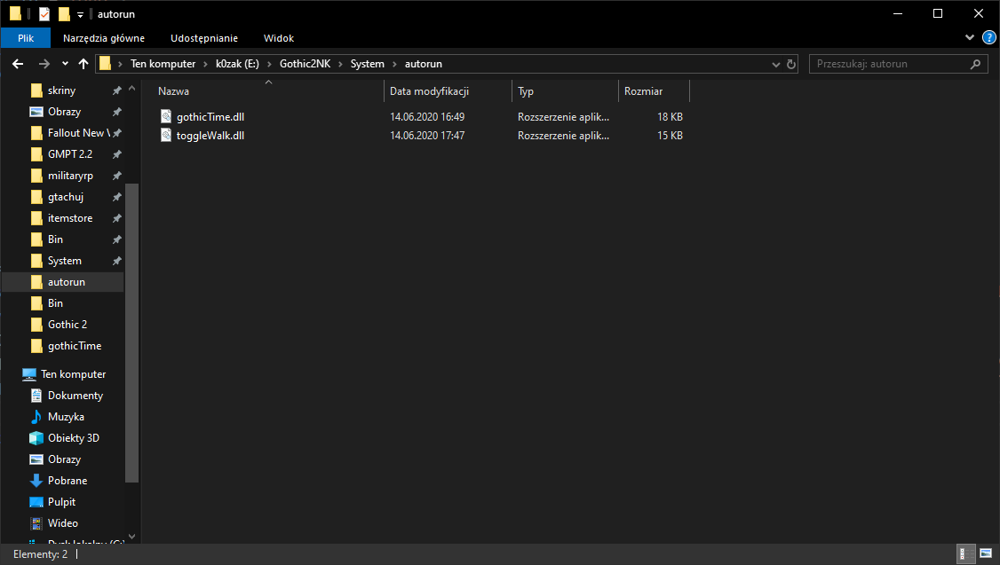

Strona główna
Zamieszczam tu różne twory do Gothica.
Do poprawnego działania plików .dll potrzebna jest instalacja Uniona. LINK
Pliki dll wrzucamy do folderu autorun. Przykład ścieżki: E:\Gothic2NK\System\autorun

Zapraszam także na mój kanał YouTube